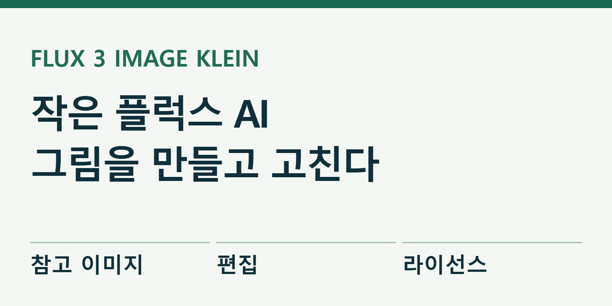
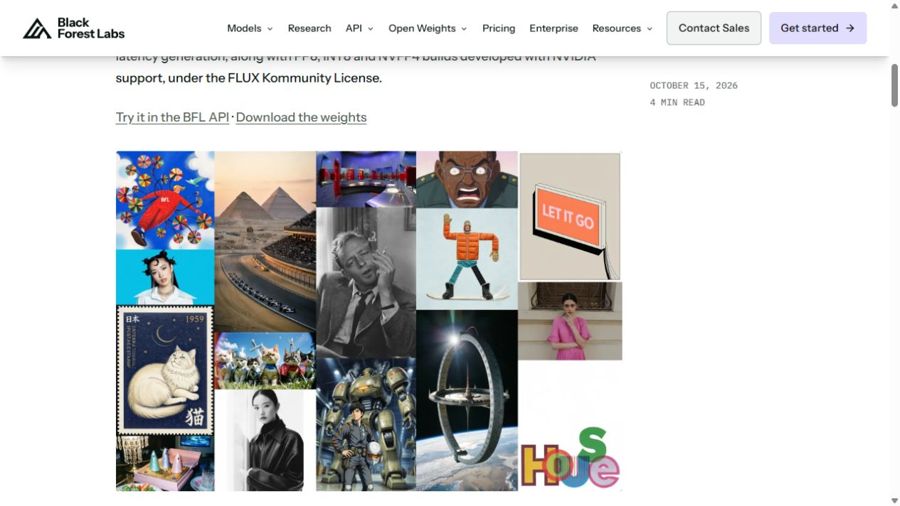

작은 플럭스 AI로 그림을 만들고 고친다
블랙포리스트랩스가 10월 15일 이미지 생성·편집 모델 FLUX 3 Image Klein을 공개했다. 문장으로 그림을 만드는 데서 끝나지 않고, 참고 이미지를 이용하거나 바꿀 위치를 정해 수정할 수 있다. 모델 파일도 내려받을 수 있어 제작 환경에 맞게 직접 실행하는 길이 열렸다. 공식 발표

뉴스 채널 운영자라면 매번 다른 그림을 만드는 것보다 같은 캐릭터와 색을 유지하면서 장면을 바꾸는 일이 더 번거로울 수 있다. 이번 모델을 살펴볼 이유도 그 지점에 있다. 멋진 결과 한 장보다, 다음 장을 얼마나 덜 고치고 만들 수 있는지가 중요하다.
이미지 여러 장을 참고하고, 바꿀 자리를 지정한다
공식 저장소는 최대 10장의 참고 이미지와 최대 4K 생성, 사각형으로 위치를 지정하는 기능을 안내한다. 사각형은 그림 속 물체를 놓을 자리를 알려 주거나, 수정할 범위를 좁히는 데 쓰인다. 정해진 위치와 원본을 함께 전달할 수 있다는 뜻이다. 공식 코드와 실행 안내
예를 들어 썸네일 왼쪽에는 진행자 캐릭터, 오른쪽에는 큰 제목을 넣을 빈 공간이 필요하다고 하자. 참고 이미지로 캐릭터의 모습을 주고 위치를 지정하면, 전체 구도를 말로만 설명할 때보다 요구가 분명해진다. 이는 활용을 설명하기 위한 예시이며, 이 기사에서 직접 생성해 성공을 확인한 결과는 아니다.
공식 API 문서에는 새의 색을 바꾸거나, 참고 그림의 표현 방식을 가져오거나, 인물의 위치를 옮기는 요청 예시가 나온다. 원본을 넣고 변경할 부분을 설명하는 방식이다. 독자는 실제 입력·출력 형식을 보며 무엇을 전달해야 하는지 확인할 수 있다.

썸네일 작업에 적용한다면 이렇게 확인한다
처음부터 복잡한 포스터를 맡기기보다는 원본 한 장과 수정 요청 하나로 시작하는 편이 비교하기 쉽다. 예를 들어 “캐릭터 얼굴과 남색 배경은 유지하고, 오른쪽 아래 컵만 주황색으로 바꿔 줘”라는 요청이다. 이때 중요한 검사는 컵의 색뿐 아니라 얼굴과 배경이 그대로인지도 함께 보는 것이다.
다음 단계에서는 같은 원본으로 가로와 세로 구도를 만들어 볼 수 있다. 인물이 잘렸는지, 중요한 물건이 제목에 가려지는지, 서로 다른 장면에서도 캐릭터가 같은 사람처럼 보이는지를 확인한다. 글자를 그림에 함께 생성하는 경우에는 한글 철자와 줄바꿈을 별도로 읽어 봐야 한다. 이번 확인에서는 한국어 제목 생성 품질을 직접 시험하지 않았다.
작업 기록에는 입력 이미지, 요청문, 생성 시간, 다시 고친 횟수를 남기는 편이 좋다. 처음 나온 한 장만 고르면 모델의 실력을 과대평가하기 쉽다. 똑같은 조건으로 여러 장을 만들어 편집에 쓸 수 있는 결과의 비율까지 보면, 실제로 시간을 줄여 주는지 판단할 수 있다.
8GB 그래픽카드 지원은 실행 조건을 함께 봐야 한다
발표에서 제시한 이미지 생성부 규모는 56억 매개변수다. 회사는 INT8이라는 압축 형식으로 그래픽 메모리 8GB 환경도 지원한다고 설명한다. 여기서 8GB는 특정 실행 형식의 조건이다. 모든 해상도와 참고 이미지 개수에서 같은 속도와 메모리를 보장한다는 안내는 아니다. 실행 조건과 측정 기준
모델 파일을 내려받는 것과 바로 이미지가 나오는 것은 다른 단계다. 실행 프로그램, 그래픽카드 지원, 모델 형식이 맞아야 한다. 이미 ComfyUI 같은 제작 도구를 쓰는 사람과 처음 설치하는 사람의 준비 시간도 다르다. 회사 업무용 컴퓨터라면 설치 권한과 저장 공간부터 확인할 필요가 있다.
공식 저장소는 추가 학습용 기본 모델과 빠른 생성용 모델을 나누고, 요청문을 모델에 맞게 보완하는 절차도 안내한다. 따라서 비교 실험에서 한쪽은 공식 권장 절차를 쓰고 다른 쪽은 빼면 공정한 비교가 어려워진다. 결과를 보여 줄 때 모델 이름뿐 아니라 어떤 버전과 설정을 썼는지도 남겨야 한다.
빠르다는 발표와 내 작업의 총시간을 구분한다
회사의 품질 순위는 내부 평가다. 발표에 나온 GPU 생성 시간과 인터넷으로 요청하는 API 응답 시간도 측정 범위가 다르다. 전자는 주로 장치 안의 계산을, 후자는 대기와 통신까지 포함한다. 그래프의 숫자를 그대로 가져와 “누구나 몇 초”라고 소개하기는 어렵다.
제작자에게 더 직접적인 비교는 완성까지의 시간이다. 첫 결과가 빨리 나와도 손가락이나 글자를 여러 차례 고쳐야 하면 이점이 줄어든다. 반대로 한 장의 계산이 조금 느려도 인물과 구도를 안정적으로 유지한다면 전체 작업은 빨라질 수 있다. 속도와 수정 횟수를 함께 기록해야 하는 이유다.
공식 웹 문서로 모델을 호출하는 API는 별도 사용 요금이 붙는 경로다. 직접 실행할 때는 장비와 전력, 관리 시간이 들어간다. 무료로 내려받는다는 표현을 곧바로 “제작비가 들지 않는다”로 바꾸면 안 된다. 이번 기사에서는 유료 생성 요청이나 별도 설치를 진행하지 않았다.
모델 라이선스와 코드 라이선스가 다르다
모델은 FLUX Kommunity License를 따른다. 본인과 관계사의 연환산 총매출이 합계 500만 달러 미만인 이용자에게는 조건에 따라 결과물 생성 목적의 상업 사용을 허용한다. 연환산 총매출이 500만 달러 이상이거나 다른 상업 목적에 해당한다면 별도 허용 범위를 확인해야 한다. 이를 제한 없는 무료 상업 라이선스로 소개하면 부정확하다.
참고 실행 코드는 Apache 2.0으로 공개돼 있지만, 그 조건이 모델 가중치에 그대로 적용되는 것은 아니다. 가중치는 AI가 학습한 숫자 파일이다. 코드와 그 파일에 붙은 문서를 따로 확인해야 한다. 생성물을 공개할 때에도 불법·권리 침해 내용 검토 등 모델 라이선스의 요구가 남는다.
실제 원본 예시를 보고 판단한다
공식 발표의 결과 이미지에는 여러 표현 방식의 예시가 실려 있다. 이 자료는 회사가 골라 공개한 결과라는 설명과 함께 보는 것이 맞다. KIKUKE가 직접 만든 결과처럼 표시하거나, 한 예시만으로 한국어 뉴스 썸네일에서도 같은 품질이 나온다고 단정하지 않는다.
제품 소개에 필요한 로고는 공식 브랜드·프레스킷에서 확인할 수 있다. 공식 로고를 임의로 다시 그리는 대신 제공된 자산과 색상·여백 규칙을 따르는 방식이 적절하다. 로고 사용 안내와 개별 생성 이미지의 재배포 허락은 별개로 확인해야 한다.
이번 변화는 이미지 AI를 직접 다루며 반복 제작하려는 사람에게 특히 관련이 있다. 먼저 작은 수정 한 건을 시험하고, 원본 보존·수정 횟수·총비용을 비교하면 된다. 그 결과가 쌓여야 이 모델을 채널의 제작 도구로 계속 쓸지 결정할 수 있다.
출처와 더 읽을 자료
- FLUX 3 Image Klein 공식 발표
- 공식 실행 코드와 모델 사용 안내
- 공식 API 생성·편집 예시
- FLUX Kommunity 모델 라이선스
- Black Forest Labs 브랜드·프레스킷
대표 이미지는 제품명과 기사의 핵심을 편집부가 배치한 설명용 표지이며 실제 제품 화면이 아니다. 본문의 원본 화면·영상은 각 자료 아래에 출처와 제공 주체를 표시했다. 직접 실습하지 않은 회사 시연을 편집부의 실행 결과로 표시하지 않았다.